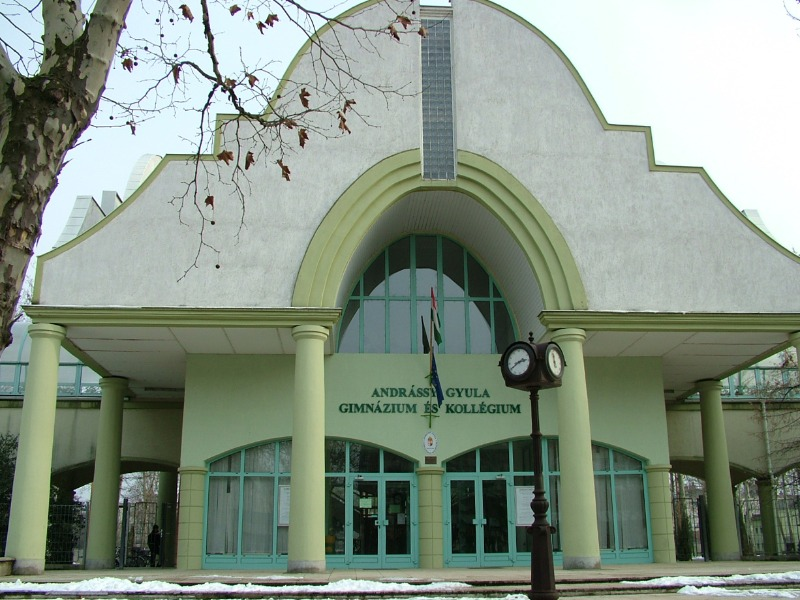
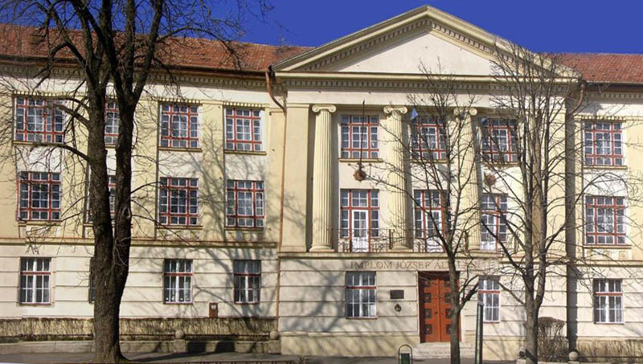

Önéletrajz
 Gyulán lakom ezért természetesen tanulmányaimat is itt kezdtem meg az Implom József Általános Iskolában. Német tagozatos osztályba jártam amely azt jelentette hogy első osztálytól kezdve heti öt órában tanultuk ezt az idegen nyelvet. Az itt elért kiváló eredményeim miatt sikerült felvételt nyernem, nyolcadikos koromban a megye egyik legjobb gimnáziumába. A békéscsabai Andrássy Gyula Gimnáziumba jelentkeztem reál tagozatú osztályba, mivel a kedvenc tantárgyam a matematika és a fizika volt. A gimnáziumi éveim során ez nem is változott. Az érettségit matematikából emelt szinten, fizikából pedig középszinten tettem le. Angolból középfokú nyelvvizsgával rendelkezem, amelyet szintén gimnáziumi éveim alatt szereztem.